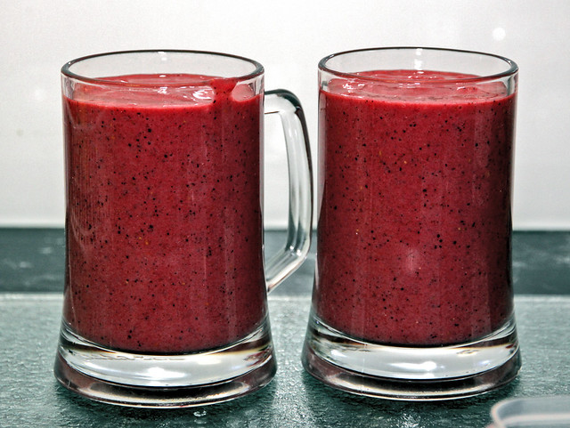

Strawberry Kiwi Smoothie

photo by:Stephen Mitchell
For those in need of some extra vitamins, this smoothie is for you!
Lacking vitamins? Need something light but filling? Then you should try this strawberry kiwi smoothie.
Filled with plenty of different fruits and some oatmeal, this smoothie is packed full of vitamins you need to have an energizing day.
This easy to make smoothie will soon become your daily go to!
Ingredients Needed:
- 2 small ripe kiwis
- 1/2 cup frozen strawberry halves
- 1/2 medium orange
- 1/2 banana
- 1/2 cup skim milk (or milk of choice)
- 2 tablespoons rolled oats or quick oats
- Small handful of ice (optional)
- 1-2 teaspoons honey (optional)
Steps:
- Place oats in blender and pulse until they are finely ground
- Cut the banana, kiwi, and orange into chunks then add to the blender along with the milk
- Add the ice and honey if you are using them
- Blend everything together until you have a smooth and creamy texture
- Taste and add sweetener if desired
- Enjoy!
Strawberry Kiwi Smoothie by Well Plated